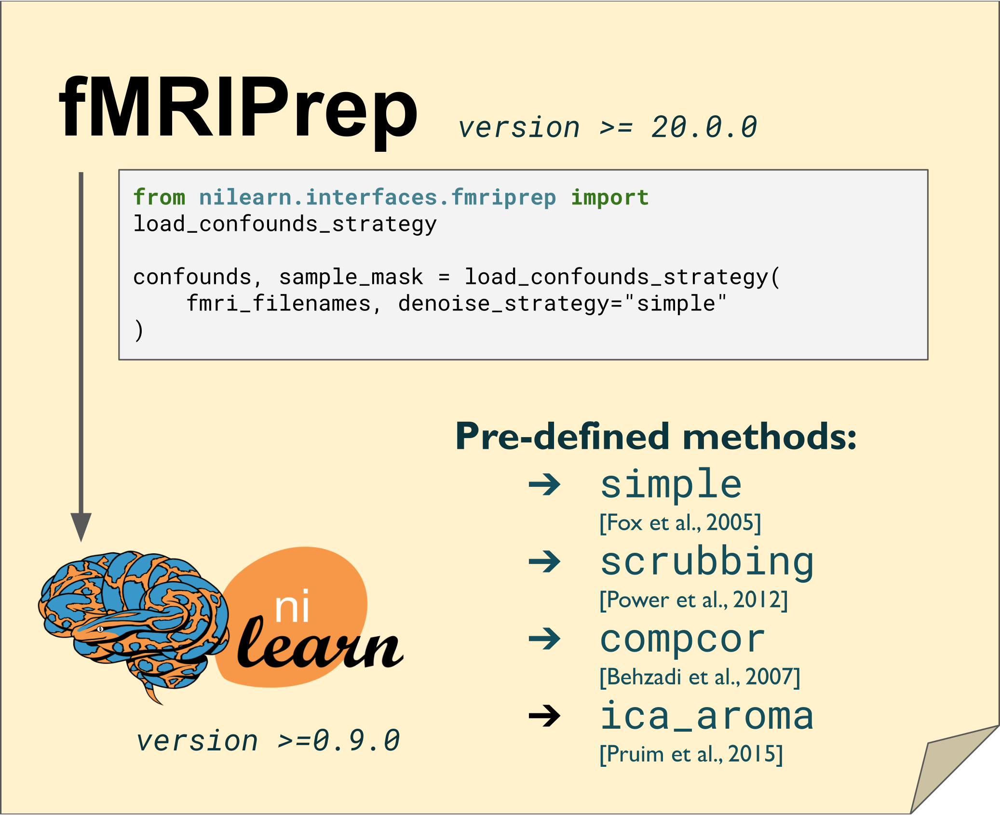

Summary
Summary#
Reducing contributions from non-neuronal sources is a crucial step in functional magnetic resonance imaging (fMRI) analyses. Many viable strategies for denoising fMRI are used in the literature, and practitioners rely on denoising benchmarks for guidance in the selection of an appropriate choice for their study. However, fMRI denoising software is an ever-evolving field, and the benchmarks can quickly become obsolete as the techniques or implementations change. In this work, we present a fully reproducible denoising benchmark featuring a range of denoising strategies and evaluation metrics, built primarily on the fMRIPrep [Esteban et al., 2018] and Nilearn [Abraham et al., 2014] software packages. We apply this reproducible benchmark to investigate the robustness of the conclusions across two different datasets and two versions of fMRIPrep. The majority of benchmark results were consistent with prior literature. Scrubbing, a technique which excludes time points with excessive motion, combined with global signal regression, is generally effective at noise removal. Scrubbing however disrupts the continuous sampling of brain images and is incompatible with some statistical analyses, e.g. auto-regressive modeling. In this case, a simple strategy using motion parameters, average activity in select brain compartments, and global signal regression should be preferred. Importantly, we found that certain denoising strategies behave inconsistently across datasets and/or versions of fMRIPrep, or had a different behavior than in previously published benchmarks, especially ICA-AROMA. These results demonstrate that a reproducible denoising benchmark can effectively assess the robustness of conclusions across multiple datasets and software versions. Technologies such as BIDS-App [Gorgolewski et al., 2017], the Jupyter Book [Granger and Pérez, 2021] and Neurolibre [Karakuzu et al., 2022] provided the infrastructure to publish the metadata and report figures. Readers can reproduce the report figures beyond the ones reported in the published manuscript. With the denoising benchmark, we hope to provide useful guidelines for the community, and that our software infrastructure will facilitate continued development as the state-of-the-art advances.

Keywords:
reproducibility,
fMRIPrep,
nilearn,
nuisance regressor,
resting-state fMRI,
functional connectivity